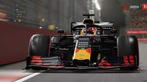
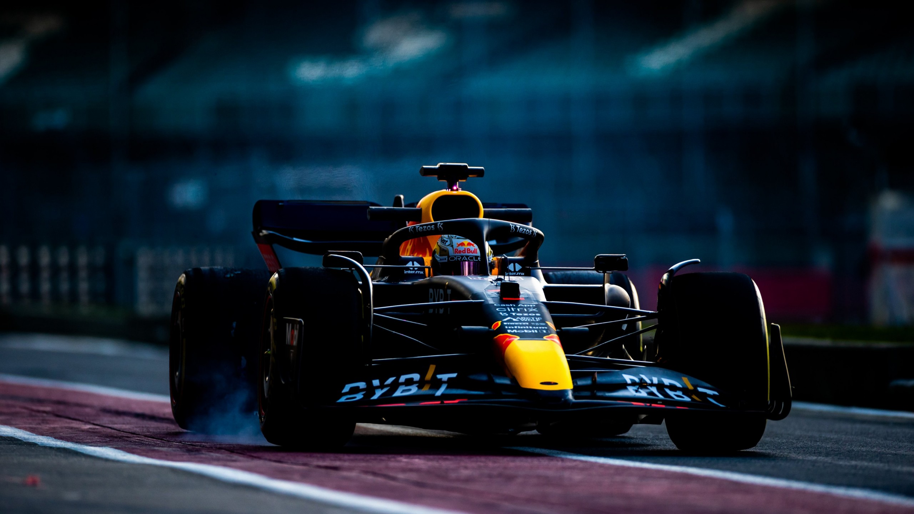
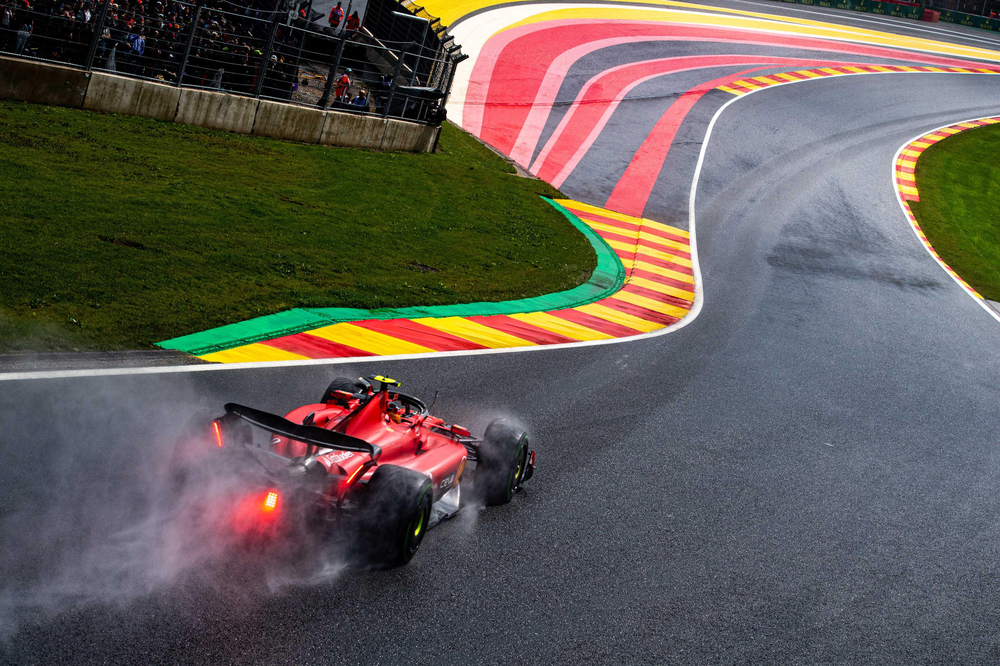
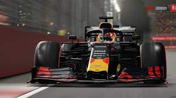
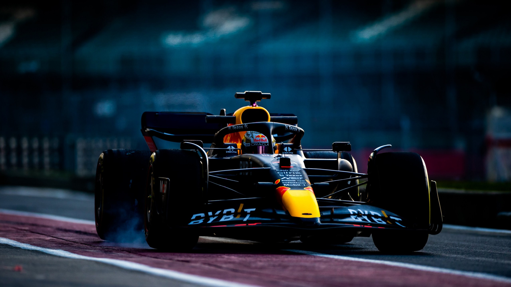
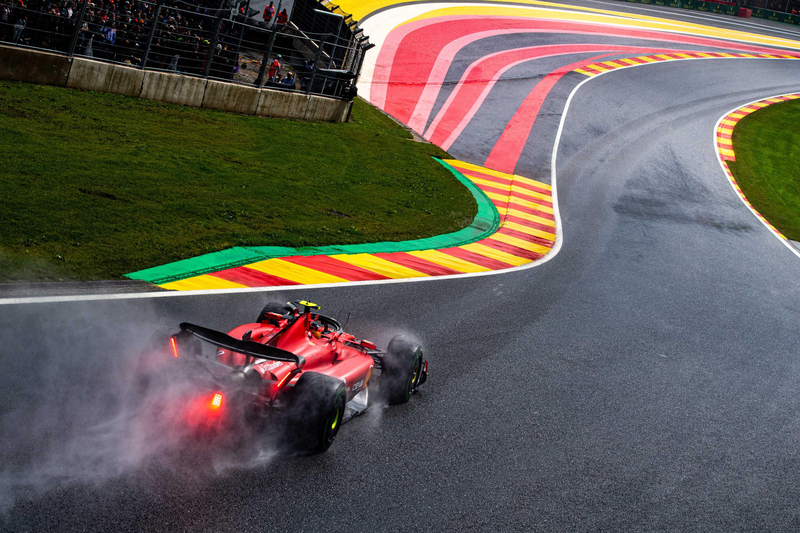

Istorija
Prvo takmičenje Formule 1 održano je 1950. godine. Prvenstvo Formule 1 je prvi osvojio Italijan Đuzepe Farina u svojoj Alfi, „za dlaku“ pobedivši svog argentinskog timskog kolegu Huana Manuela Fanđa. Fanđo je ipak osvojio titulu 1951, i još četiri u narednih šest godina. Titulu mu je preuzeo dvostruki svetski šampion Alberto Askari, vozač Ferarija. Iako je uvek bio blizu titule, Britanac Sterling Mos nikad nije osvojio titulu najboljeg vozača. Fanđo je ostao poznat po tome što je dominirao Formulom 1 čitavu deceniju.
Prvi Britanac koji je osvojio Svetsko prvenstvo je bio Majk Hotorn, donevši Ferariju titulu 1958. Međutim dolaskom Kolina Čapmana u F1 kao dizajnera šasija i kasnije osnivača Lotusovih automobila, vozači i timovi iz Velike Britanije postali su dominantni formulom 1 kroz celu deceniju. Pored Džima Klarka, Džekija Stjuarta, Džeka Brabama, Grejama Hila i Denija Hjuma, britanski timovi i njihovi vozači su osvojili 12 šampionata od 1962. do 1973.
Godine 1962. uvedeno je novo vozilo sa aluminijskom šasijom nazvanom monokok umesto tradicionalne tubularne šasije. Godine 1968. Lotus je stavio reklamna slova Imperijal tobaka na vozilo i tako uveo sponzorstvo u taj sport.
Aerodinamika je polako dobila važnost u dizajniranju vozila sa pojavom aerofoila u kasnim 1960. Kasnih sedamdesetih Lotus je uveo zemljani efekt aerodinamike koji je bolidima povećao brzinu na krivinama.
Stvaranje Međunarodne federacije sportskih automobila 1979. je uzrokovalo niz nesporazuma između FISE i FOCE u kojima su se FISA i njen predsednik Žan Marij Balestre neprestano sukobljavala sa društvom konstruktora Formule 1 oko televizijskih zarada i tehničkih pravila.
FIA je stavila zabranu na zemljani efekt aerodinamike u sezoni Formule 1 1983. Do tada su već turbonabijeni motori, koje je Reno uveo 1977, proizvodili 700 ks (520 kW) i tako postali neizostavni deo takmičenja. Kasnije, tačnije 1987, turbo bolidi Formule 1 su proizvodili 1000 ks u trci. Ti automobili su bili i ostali najsnažniji trkaći automobili ikad napravljeni. Da bi smanjila energiju motora i brzinu, FIA je ograničila kapacitet rezervoara goriva 1984. i smanjila brzine bolida 1988. pre zabrane motora sa turbo punjenjem 1989.
U ranim devedesetim ekipe su uvele pomoćnog elektronskog vozača za upravljanje snagom motora, kontrolu protiv proklizavanja i poluautomatski menjač. Neke su posuđene od savremenih motornih vozila. Neke kao aktivni oves je prvenstveno napravljen za stazu a kasnije su se probile na tržište ličnih automobila. FIA je zbog pritužbi da je tehnologija određivala rezultat trka više nego vozačeva veština zabranila 1994. mnogo takvih pomoćnih sredstava. Ipak mnogi posmatrači su smatrali da je zabrana takvih pomoći vozačima zapravo bila zabrana zato što FIA nije imala neku tehnologiju koja bi eliminisala takve stvari u trci.
Timovi su potpisali drugi dogovor o slaganju (Dogovor Konkord), 1992. i treći 1997. koji ističe krajem 2007.
Na stazi ekipe Maklaren i Vilijams su dominirale 80-ih i 90-ih. Honda i Maklaren su najviše dominirali za vreme osamdesetih dok je Reno pojačan za Vilijamsovim vozačima dobio nekoliko prvenstava sredinom 90-ih. Rivalstvo između trkačkih legendi Airtona Sene i Alena Prosta je postalo u pravo sportsko rivalstvo u sezoni 1988. i nastavila se sve dok se Prost nije povukao krajem 1993. Tragična pogibija Sene 1994. u krivini Tamburelo na Velikoj nagradi San Marina je uslovila poboljšanje sigurnosnih standarda u Formuli 1. Od tog vikenda nijedan vozač nije poginuo za vreme trke.
Zbog tehnoloških napredaka u 90-im cena takmičenja u Formuli 1 je dramatično porasla. To je povećalo finansijski teret, što je rezultovalo da niskobudžetne ekipe nisu finansijski mogle opstati u Formuli 1. Od 1990. 28 timova se povuklo iz Formule 1 što je podstaklo bivšeg vlasnika Džordan F1 tima Edija Džordana da kaže da su dani takmičenja gusarskih brodova gotovi.
 




